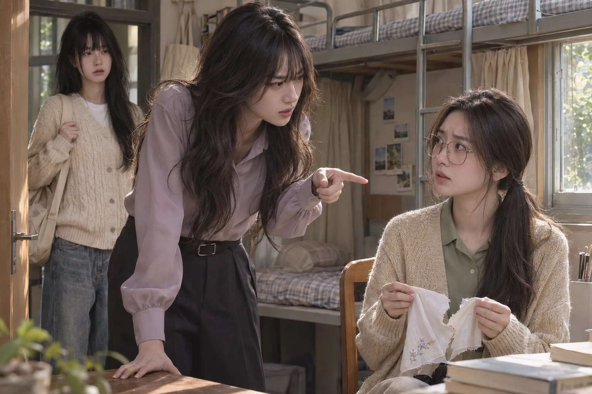
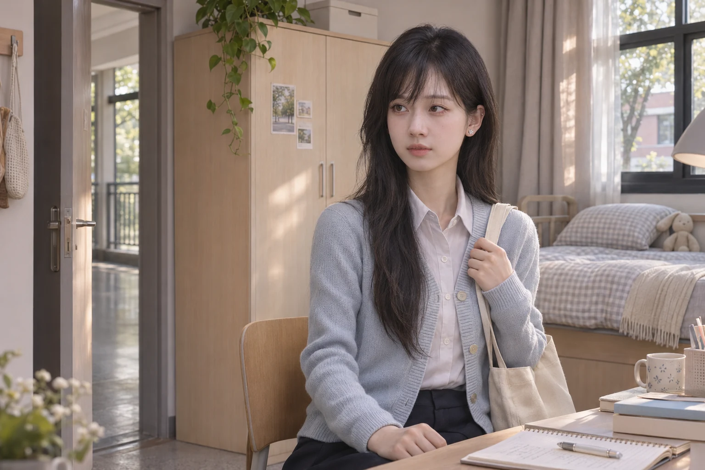
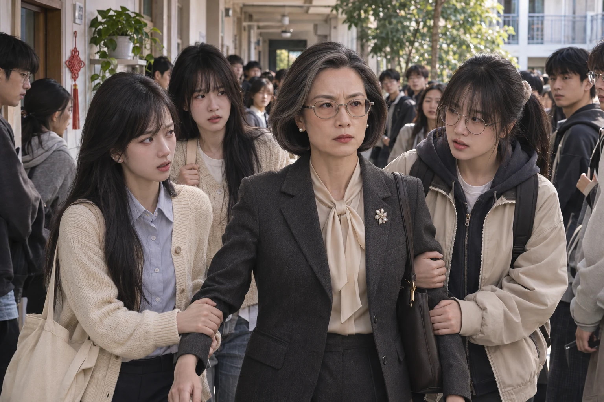
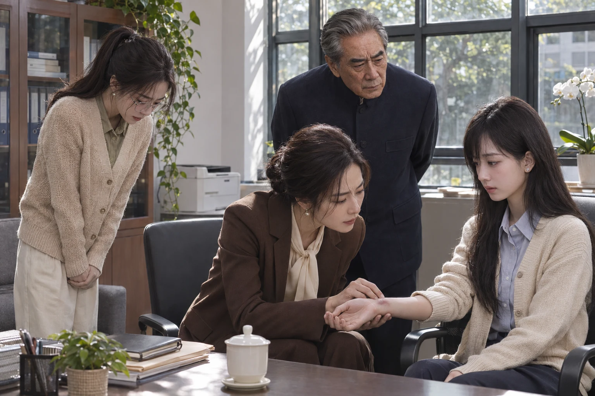
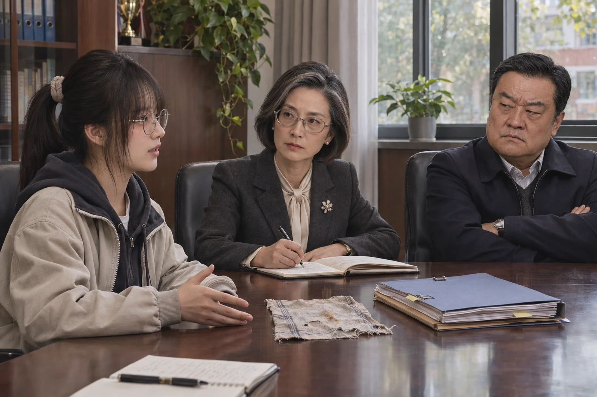

ตอนที่ 28
เหนือการควบคุม
ผู้มาใหม่ต่างชะงักค้างไปตาม ๆ กัน เพราะไม่คิดว่าซ่งอวิ๋นอยู่ที่นี่ด้วย แต่นั่นไม่ได้ทำให้หนานชิวเปลี่ยนความตั้งใจ เธอปรี่เข้ามาในห้องด้วยสีหน้าโกรธจัด
“มาที่นี่ทำไม” หนานหรงกลืนก้อนสะอื้นลงคอ เงยหน้าถามหนานชิวอย่างชินชา
“นี่หมายความว่ายังไง” หนานชิวเอาผ้าเช็ดหน้าขาด ๆ ผืนหนึ่งเขวี้ยงใส่หน้าหนานหรง มันเคยเป็นของรักของเธอ แต่ตอนนี้ขาดวิ่นหมดแล้ว “แกทำใช่ไหม แกอิจฉาที่พ่อรักฉันมากกว่า เลยมาทำลายของที่ฉันรักเหรอ”
“เธอพูดเรื่องอะไร ฉันไม่ได้ทำ” หนานหรงหยิบผ้าเช็ดหน้าที่ร่วงมาอยู่ตรงตักขึ้นมาดู เธอไม่เคยเห็นมันมาก่อนเลยด้วยซ้ำ

“อย่ามาทำไขสือ เธออิจฉาฉันทุกอย่าง จะบอกอะไรให้นะหนานหรง ต่อให้เธอเรียกร้องความสนใจขนาดไหน พ่อก็ไม่รักเธออยู่ดี”
ซ่งอวิ๋นตกใจที่หนานชิวกล้าทำขนาดนี้ทั้งที่ตัวเองเป็นแค่ลูกนอกสมรส พานให้นึกถึงชะตาชีวิตตนเองในความฝัน ความรู้สึกอยากปกป้องจึงมีเต็มเปี่ยม หญิงสาวผุดลุกขึ้นยืน พลางเลิกคิ้วถามด้วยแววตาเย็นชา
“คุณหนูรองหนาน ทำเกินไปหรือเปล่า คุณกำลังก่อความวุ่นวายนะ” หญิงสาวกันหนานหรงไว้ข้างหลัง เพราะดูแล้วอีกฝ่ายคงไม่สู้แน่ เผลอ ๆ ตอนอยู่ที่บ้านอาจเจอเรื่องหนักหนากว่านี้
“เป็นเรื่องภายในตระกูลหนาน เธอไม่เกี่ยวหลบไป” หนานชิวไม่ชอบพวกลูกเมียหลวงเป็นทุนเดิม อารามโกรธจัด เธอจึงผลักซ่งอวิ๋นออกไปสุดแรงแบบไม่ทันนึกถึงผลลัพธ์ที่จะตามมา
“โอ๊ย!!” ซ่งอวิ๋นเซถลาไปชนตู้ข้างเตียง อันที่จริงเธอไม่ได้เจ็บ แค่สำออยให้ดูเป็นเรื่องใหญ่เท่านั้น เพราะหอพักนักศึกษามีกฎข้อหนึ่ง ห้ามทะเลาะวิวาทหรือทำร้ายร่างกายกัน
ซึ่งหางตาเธอยังเห็นซ่งหว่านทำตัวเป็นคนวงนอก คล้ายว่าไม่มีส่วนเกี่ยวข้องใด ๆ กับเรื่องที่เกิดขึ้น แต่พอเรื่องราวไม่เป็นอย่างที่คิด ก็หงุดหงิดขึ้นมา
“อาอวิ๋นเจ็บมากไหม” หนานหรงตื่นตะลึง ประคองซ่งอวิ๋นด้วยดวงตาแดงจัด
ไม่นึกว่าหนานชิวจะกล้าทำแบบนี้ในรั้วมหาวิทยาลัย ตอนอยู่ที่บ้านจะกลั่นแกล้งเธออย่างไรก็ช่าง แต่ไม่ควรทำร้ายร่างกายคนอื่น
“เธอทำเกินไปแล้ว มาทำร้ายร่างกายคนอื่นแบบนี้ได้ยังไง ประธานหนานสั่งสอนลูกสาวได้ดีจริง ๆ” ฟ่านเยว่ไม่ยิ้มอีกแล้ว เธอช่วยประคองซ่งอวิ๋นขณะที่เฉียวอันฉียังอ้ำอึ้งอยู่กับที่
“ฉัน.. เจ็บข้อมือ” ใบหน้าหวานเหยเก แสร้งเจ็บได้แบบสมจริงสมจัง ไหน ๆ ก็ไหน ๆ แล้ว ไปห้องกิจการนักศึกษากันให้หมด เธออยากเห็นจริง ๆ ว่าประธานหนานจะทำหน้ายังไง ลูกรักก่อเรื่องใหญ่โตขนาดนี้

“อะไร ฉันผลักเบา ๆ เองนะ อย่าทำเรื่องเล็กให้เป็นเรื่องใหญ่ได้ไหม” หนานชิวเริ่มลนลาน เมื่อครู่เธอโมโหจริง ๆ แต่เธอมั่นใจว่ามันไม่รุนแรงเลย
“งั้นให้ฉันลองผลักเธอดูบ้างไหมล่ะ” หนานหรงหมดความอดทน ตะคอกกลับจนเส้นเอ็นบริเวณลำคอปูดนูน
หนานชิวเบิกตากว้าง “เธอกล้า!!”
“พวกเรา.. ไปห้องพยาบาลกันดีกว่า จบกันแค่นี้ เปิดเทอมวันแรกอย่ามีเรื่องกันถึงขั้นต้องเรียกผู้ปกครองเลยนะ”
แทนที่เฉียวอันฉีจะบอกให้ไปแจ้งอาจารย์ กลับขอให้จบกันตรงนี้
“พูดอะไรน่ะ อาอวิ๋นเจ็บตัวนะ จะจบง่าย ๆ ได้ยังไง อีกอย่างผู้หญิงคนนี้ปรี่เข้ามาในห้องเราโดยไม่ได้รับอนุญาต อย่างน้อยก็ต้องตักเตือนให้เคารพกฎ” ฟ่านเยว่ไม่พอใจ ทั้งยังไม่รอฟังคำคัดค้าน ประคองซ่งอวิ๋นออกจากห้อง
ทันทีที่ออกมาก็เห็นจีนมุงกลุ่มย่อม ๆ แอบดูสถานการณ์อยู่ซ่งอวิ๋นเก็บทุกอย่างไว้ในใจ กุมข้อมือตัวเองและเดินตามการประคอง ตอนผ่านหน้าซ่งหว่าน เธอยังไม่หลุดออกจากบทบาท
“เดี๋ยวสิ พวกเราพูดคุยกันได้ ไม่เห็นต้องทำเรื่องเล็กให้เป็นเรื่องใหญ่เลย” หนานชิวรู้ตัวแล้ว หากวันนี้เรื่องไปถึงฝ่ายปกครองนักศึกษา ต่อให้ไม่โดนไล่ออก แต่เธอต้องโดนเพ่งเล็งแน่ อีกอย่างเธอไม่อยากให้พ่อคิดว่าเธอทำตัวเหลวไหล
“อาจารย์มาแล้ว” นักศึกษาคนนึงในหมู่จีนมุงพูดขึ้น ก่อนกลุ่มคนจะแหวกทางให้อาจารย์หญิงหน้าตาเข้มงวดสวมแว่นหน้าเตอะเข้ามา
“เกิดอะไรขึ้น นักศึกษาบาดเจ็บตรงไหน” อาจารย์หญิงวัยกลางคนประเมินสถานการณ์ ก็เห็นว่าเด็กที่บาดเจ็บเป็นอันดับหนึ่งของการสอบเกาเข่า หัวใจเธอกระตุกวูบ นี่มันอนาคตของชาติ จะมาบาดเจ็บและกระทบต่อการเรียนได้อย่างไร
“หนูเจ็บข้อมือค่ะ”
“เดินไหวไหม”
“ยังเดินไหวอยู่ค่ะ”
“ผู้เกี่ยวข้องทั้งหมดตามมาที่ห้องกิจการนักศึกษา”

“ทำไมถึงยังยืนนิ่งอยู่ล่ะ เธอก็เป็นผู้เกี่ยวข้องด้วยไม่ใช่เหรอ” ฟ่านเยว่มองซ่งหว่านอย่างเอาเรื่อง เพราะอีกฝ่ายเป็นคนพาหนานชิวมา จะกันตัวเองไว้วงนอกได้อย่างไร
“ฉันไม่คิดว่าจะเป็นแบบนี้..” ซ่งหว่านหลุบตาลงพูดเสียงสั่นเครือ ปกปิดความหงุดหงิดแทบไม่มิด
ซ่งอวิ๋นเดินอยู่ด้านหน้าพยายามกลั้นยิ้ม รู้อยู่แล้วว่าฟ่านเยว่ต้องทักท้วงขึ้นมาแน่ ๆ ต่อให้อีกฝ่ายไม่ทำ เธอก็จะทำอยู่ดี ในเมื่อชอบบงการ ชักใย ใช้ประโยชน์จากผู้อื่นอยู่เบื้องหลัง งั้นวันนี้ลองโดนดึงออกมาเป็นผู้เล่นบ้าง สร้างประสบการณ์ใหม่ ๆ
เสียงของนักศึกษารอบด้านดังให้ได้ยินเป็นระยะ ๆ หนานชิวใบหน้าตึงเครียด พยายามจะสะกิดพี่สาวต่างแม่ ไม่ให้อีกฝ่ายพูดในสิ่งที่ไม่ควรพูด แต่หนานหรงกลับเมินเฉยต่อสัญญาณของน้องสาวนอกสมรส
หากเรื่องนี้เกิดขึ้นกับเธอคนเดียว เธอพอจะอดทนและมองข้ามได้ แต่ความอดทนเธอก็มีขีดจำกัดเช่นเดียวกัน
บรรยากาศในห้องกิจการนักศึกษาหลังเหตุทะเลาะวิวาทหนักอึ้งจนแทบได้ยินเสียงลมหายใจ ทุกคนเงียบผิดปกติ โต๊ะยาวกลางห้องมีแฟ้มเอกสารกองอยู่เป็นระเบียบ ข้างกันมีแก้วชาที่อาจารย์ยังไม่ได้แตะต้อง
การที่นักศึกษามีเรื่องทะเลาะวิวาทตั้งแต่เปิดเทอมวันแรกไม่ใช่เรื่องดีเลยสักนิด อาจารย์ฝ่ายดูแลกิจการนักเรียนต่างสีหน้าเคร่งเครียด พวกเขาได้ฟังเรื่องคร่าว ๆ และติดต่อไปหาผู้ปกครองของนักเรียนทั้งสองฝ่ายแล้ว ตอนนี้กำลังรอให้ผู้ปกครองเดินทางมาถึง
“ลองบิดข้อมือดู เจ็บไหมคะ” พยาบาลกำลังตรวจอาการของซ่งอวิ๋น เธอพบว่าไม่ได้เป็นอะไรมากนัก แค่รอยช้ำเขียวเล็ก ๆ แต่ไม่บาดเจ็บถึงกระดูก
“ปวดนิดหน่อยค่ะ แต่ไม่ได้เจ็บมากแล้ว” ซ่งอวิ๋นบิดข้อมือ ดวงหน้ารูปไข่ยังเหยเกอยู่เล็ก ๆ อันที่จริงรอยเขียวนี้ไม่ได้หนักหนา เธอเป็นคนผิวขาว มักเกิดรอยช้ำได้ง่าย
ว่าไปแล้วตอนเรียนศิลปะป้องกันตัว ร่างกายเธอทั้งเขียวทั้งม่วง บางครั้งก็เคยพลาดจนข้อมือซ้น ข้อเท้าแพลง หนักหนากว่านี้หลายเท่า เธอจึงไม่รู้สึกว่ามันเจ็บ
“โชคดีแค่ไหนแล้วที่คุณซ่งไม่เจ็บตัวมากกว่านี้ ถ้าเพื่อนแขนหักขึ้นมา ต้องเสียเวลาเรียนไปเปล่า ๆ คุณจะรับผิดชอบไหวเหรอคุณหนานชิว” อาจารย์วัยกลางคนตำหนิอย่างไม่ไว้หน้า
“หนู.. ไม่ได้ตั้งใจค่ะอาจารย์” หนานชิวหน้าซีดสลับขาว แต่คาดโทษพี่สาวอยู่ในใจ
“คุณก็เหมือนกัน คุณซ่งหว่าน ทำไมถึงไม่ห้ามเพื่อน”
“หนู..” ซ่งหว่านเม้มปากแน่น นัยน์ตาหงส์แดงเรื่อ น้ำตาคลอหน่วย
“ผู้ปกครองของนักเรียนทยอยกันมาแล้วค่ะ” อาจารย์อีกคนเปิดประตูให้ซ่งเต๋อและโจวจิ่ว
“อวิ๋นเอ๋อร์เจ็บมากไหมลูก” โจวจิ่วโผไปหาลูกสาวทันที พอเห็นว่ารอยช้ำนั้นน้อยนิด ก็โล่งใจไปเปลาะหนึ่ง
“ไม่เจ็บแล้วค่ะแม่”
“เพราะหนู.. อาอวิ๋นเจ็บตัวเพราะอยากช่วยปกป้องหนู ขอโทษนะคะคุณป้า” หนานหรงลุกขึ้นยืนพลางค้อมศีรษะลงอย่างรู้สึกผิด

“ไม่เป็นไรลูก ใจเย็น ๆ ค่อย ๆ คุยกัน เรื่องมันเป็นไงมาไง ป้ายังไม่รู้อะไรเลย”
ผู้เฒ่าซ่งหรี่ดวงตาเฉียบคมลงเล็กน้อย สมองที่ยังเฉียบแหลมของเขาวิเคราะห์สถานการณ์ พอเห็นสายตาหลานสาวเขาก็รู้ว่าไม่ใช่เรื่องใหญ่ ไม่กี่อึดใจ ประธานหนานจื่อเฉียงและซ่งเหวินก็มาถึง
ทั้งคู่มีสีหน้าเคร่งเครียดไม่ต่างกัน เพราะลูกของพวกเขาเป็นฝ่ายก่อเรื่อง ส่วนเหตุการณ์เป็นมาอย่างไร และทางมหาวิทยาลัยจะจัดการอย่างไรนั้น พวกเขาแทบจะต่อรองไม่ได้เลย
ซ่งเหวินชะงัก เขาไม่นึกว่าคู่กรณีคือซ่งอวิ๋นและลูกสาวคนโตของประธานหนาน
“ในเมื่อทุกฝ่ายมากันแล้ว ฉันจะเล่าเรื่องคร่าว ๆ ให้ฟังอีกครั้งนะคะ”
“คุณครูคะ หนูขอเป็นคนเล่าได้ไหมคะ หนูยืนยันได้ว่าทุกคำที่จะพูดออกไปเป็นเรื่องจริง” ฟ่านเยว่ยกมือขึ้นสูง เธอกลัวครูจะตกหล่นประเด็นสำคัญ
“ตกลง คุณฟ่านเล่าได้เลย” อาจารย์หัวหน้าฝ่ายกิจการนักศึกษาอนุญาต
“หนูชื่อฟ่านเยว่นะคะ เรื่องมันเริ่มมาจาก..” ฟ่านเยว่บอกเล่าโดยลำดับเหตุการณ์สำคัญตั้งแต่ต้นจนจบอย่างละเอียด ไม่พลาดจุดสำคัญใด ๆ แถมเธอยังล้วงผ้าเช็ดหน้าขาด ๆ ที่หยิบติดมือมาก่อนออกจากห้อง มาวางไว้บนโต๊ะตัวยาว
ซ่งอวิ๋นและหนานหรงทึ่งกับความสามารถในการเรียบเรียงเรื่องราวของเพื่อนร่วมห้อง คนฟังสามารถคิดภาพตามได้เป็นฉาก ๆ เป็นความสามารถพิเศษเฉพาะตัวที่ดีจริง ๆ

“แม่หนูซ่ง เราเคยเจอกันในงานเลี้ยงหลายครั้ง จำลุงได้ใช่ไหม” พอฟังจบ ประธานหนานเลือกจะหันไปพูดกับซ่งอวิ๋นก่อนเป็นอันดับแรก
หนานจื่อเฉียงในวัยห้าสิบปีเป็นชายร่างท้วม ดวงตาเฉียงขึ้น มุมปากกดลง ทำให้เขาดูไม่น่าเข้าใกล้ แต่ยามอ้าปากพูด น้ำเสียงกลับนุ่มนวล ชวนให้ฟังคล้อยตามโดยไม่รู้ตัว
“คลับคล้ายคลับคลาอยู่เหมือนกันค่ะ” ซ่งอวิ๋นแสร้งเออออ รู้ว่าเขาเข้าทางเธอเพราะไม่อยากมีปัญหากับคุณปู่ของเธอที่นั่งแผ่บรรยากาศกดดัน
“เรื่องนี้ลูกสาวลุงเป็นฝ่ายผิด ลุงขอโทษแทนอาชิวด้วยนะ” เขาต้องกล้ำกลืนโทสะและลดศักดิ์ศรีมาขอโทษเด็กคนหนึ่ง ก็ฝืนทนมากพอสมควรแล้ว
ส่วนเรื่องที่พี่น้องทะเลาะกัน เขาต้องพากลับไปเคลียร์ต่อที่บ้าน